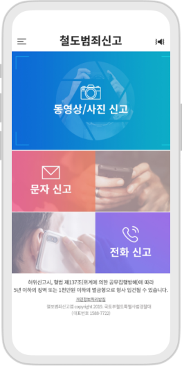
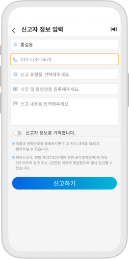
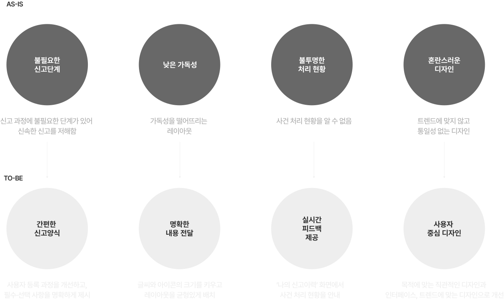

Overview
‘철도범죄신고 앱’은 KTX, 전동열차, 철도역 등 철도지역 내에서 발생하는 범죄, 사건, 민원을 신고할 수 있는 서비스입니다.
앱을 통해 사진 동영상을 첨부하여 신고하는 유용한 기능을 제공하지만, 가독성이 부족하고 사용자의 편의를 고려하지 않은 디자인에 아쉬움이 남았습니다.
그래서 우리는 이를 개선하기 위해 리디자인하게 되었습니다.
Problem: 사용자의 편의를 고려하지 않은 디자인
problem
- ① 의미가 불명확한 아이콘
- ② 두 개의 버튼이 동일한 신고 기능을 수행
- ③ 좁은 레이아웃
- ④ 가독성을 저하시키는 작은 텍스트와 아이콘


UX-Vision
소리 없이 빠르고 안전하게! 조용한 신고, 당신의 손안에.
AS-IS TO-BE
